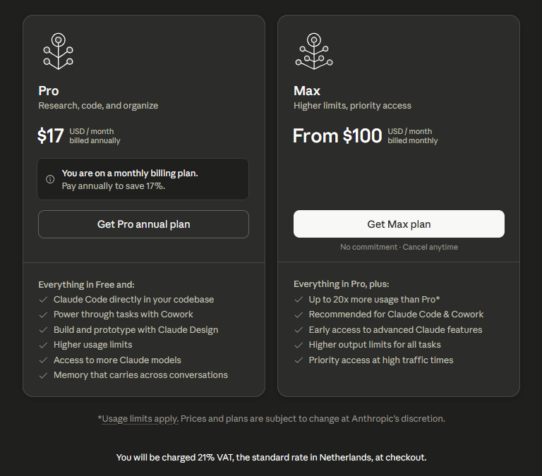
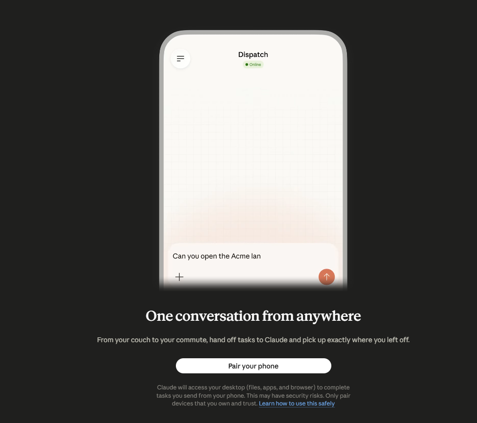

Мой опыт, мой стек, мои грабли
Имя докладчика • 2026
Это не инструкция.
Это то, что работает у меня.
Личный опыт — не научное исследование.
Не универсальный рецепт.
Ваш флоу может быть другим — и это нормально.
Не реклама. Личное мнение.
«Лучший выбор для мобильной разработки и фронтенда»
«Выглядит как помойка — работает»
«Бюджетный вариант для повседневных задач»
«Лучший для работы с текстом»
«Топ, пушка — но дорого»

Лайфхак: Pro можно делить на двоих → ~$10/мес с человека
Минус: лимит токенов — общий. Следите за расходом.
claude
Работает везде
Extension
Интеграция с IDE
«Разницы нет — выбирай по удобству»

[Официальный скриншот интерфейса — добавить перед докладом]
Это не изобретение — это классика.
Просто теперь большую часть этого делает AI.
Было
Каждый раз пишешь промт вручную
↓
Тратишь время на формулировки
↓
Промты разные — результат непредсказуем
Должно быть
Стандартизированная инструкция
↓
Один раз написал — используешь всегда
↓
Предсказуемый, повторяемый результат
Технологии меняются, промт — нет.
↓
Решение: Skills
Markdown-файл с инструкцией для нейронки.
Один раз написал — используешь в любом проекте.
/brainstorming — генерация идей и требований
/code-review — ревью кода
/security-review — аудит безопасности
/writing-plans — план реализации
Claude Code видит вызов, находит файл скилла, применяет инструкцию.
| Скилл | Назначение |
|---|---|
gstack | Продуктовая разработка |
superpowers | Технический флоу (полный цикл) |
oh-my-claudecode | Аналог superpowers |
llm-sast-scanner | Аудит безопасности кода |
ponytail | Проверяет: нужно ли изобретать велосипед? |
superpowersЭто не один скилл — это набор для полного цикла разработки
/brainstorming — исследование задачи/writing-plans — план реализации/test-driven-development — TDD/code-review — ревью/security-review — безопасность/systematic-debugging — дебаггингСпособ 1: через Claude Code
«Установи скилл superpowers»
Способ 2: через документацию
GitHub README → команды установки для каждой нейронки